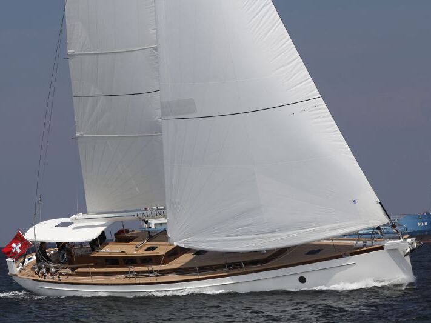

Projelerimiz
Sahadan kareler
Teslim ettiğimiz teknelerden, imal ettiğimiz kumanda ve dağıtım panolarından, altyapı işlerimizden ve proje çizimlerimizden 81 fotoğraf.

Büyütmek için fotoğrafa dokunun. Pencerede ok tuşlarıyla ya da kaydırarak gezinebilirsiniz.
Teknenizin elektrik sistemi için bize ulaşın
Yeni bir proje, bir yenileme ya da bir arıza: ilk görüşmeyi telefonda yapalım.